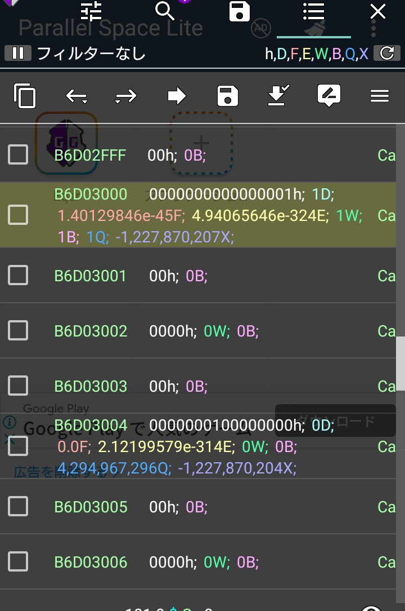

後藤機能について
後藤機能を利用するときの検索値は後藤する値を割り出す為のものになります。
検索結果が後藤する値一つだけになるように
グループ検索などを使いリファインを使用して下さい。検索結果の1だけつを後藤する仕組みになっています。
検索結果と変更したいアドレスとの距離について
これは検索結果の後藤する値と変更したいアドレスとの距離です。
↑この写真の1という値が後藤する値だとします。
クリックすると左下に後藤と出るのでそれを押します

もし、下に4つ行ったところの値を変更したいのなら4と書いてください。
もし上に4つ行ったところの値を変更したいのなら-4と書いてください。
後藤した値を変更するデーター型というのはこの時変更するデーター型のことです。
分からなかったら気軽にきいてください！動画も検討します！